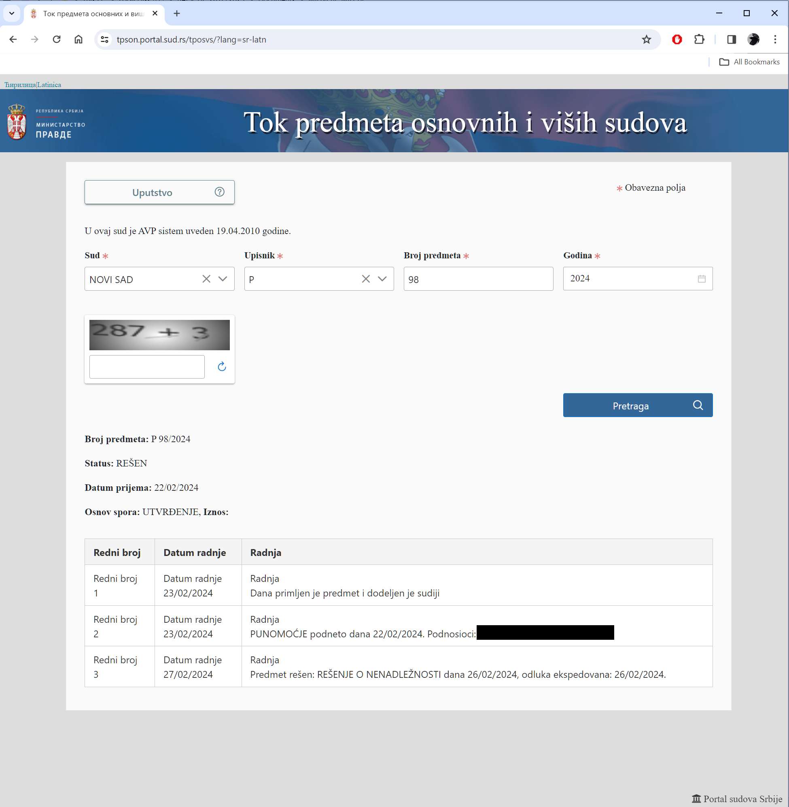

Izvorni dokument
Javno redigirani zapis sudskog portala P.98/2024
Viši sud u Novom Sadu P.98/2024 — Rješenje sutkinje dr. Biljane Lepotić o nenadležnosti, 26. veljače 2024.


Viši sud u Novom Sadu P.98/2024 — Rješenje sutkinje dr. Biljane Lepotić o nenadležnosti, 26. veljače 2024.
